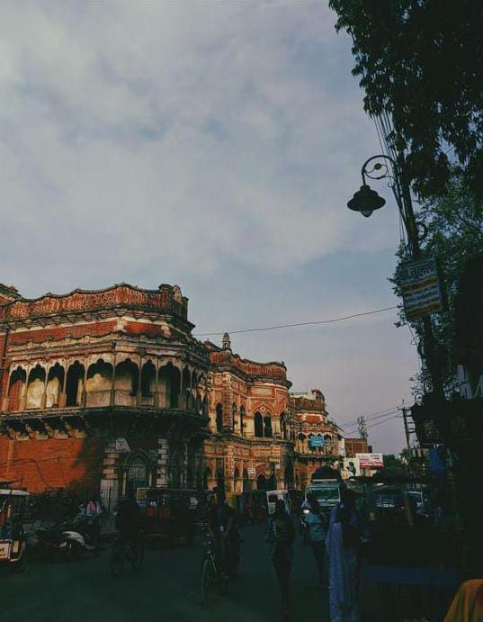

- 
Banaras
Varanasi (Vārāṇasī), also known as Benares, Banaras (Banāras), or Kashi, is a northern Indian city on the Ganges river that plays a significant role in Hindu customs related to death, sorrow, and pilgrimage. The city's religious tourism is supported by a syncretic history of Muslim artisanship.Varanasi is situated on the left side of the river and is part of the middle-Ganges valley in the southeast of the state of Uttar Pradesh. It is located 320 kilometers (200 km) southeast of Lucknow, the state capital, and 692 kilometers (430 mi) southeast of New Delhi, the capital of India. It is located 121 kilometers (75 mi) downstream of Prayagraj, another important Hindu pilgrimage place, at the Yamuna River's confluence.
One of the oldest continuously inhabited cities in the world is Varanasi. Its former name, Kashi, was linked to a 2,500-year-old kingdom of the same name. It has been suggested that the Ashoka Lion capital, located close to Sarnath, is a memorial to the Buddha's first sermon delivered there in the fifth century BCE. Adi Shankara made Shiva worship an official sect in Varanasi around the eighth century. In Varanasi, Tulsidas penned his epic poem in the Awadhi language, the Ramcharitmanas, a Bhakti movement reworking of the Sanskrit Ramayana. Many people in the area work in the tourism industry, silk weaving, carpet and craft industries, and Bharat Heavy Electricals and Banaras Locomotive Works. The city is renowned across the globe for having a large number of ghats, or stairs that descend a steep riverbank to the water where pilgrims carry out rites. The Dashashwamedh, Panchganga, Manikarnika, and Harishchandra Ghats—the latter two being the places where Hindus cremate their deceased—are particularly noteworthy. This is where the Hindu genealogical registers of Varanasi are stored. The Durga Temple, Sankat Mochan Hanuman Temple, and Shiva's Kashi Vishwanath Temple are a few of Varanasi's well-known temples.
- The revered city of Varanasi is home to the Shri Kashi Vishwanath Temple, one of the richest, oldest, and holiest sanctuaries in all of India. Known by its former name, Kashi, Varanasi, is a magnificent temple that honors Lord Shiva and is one of the twelve Jyotirlingas.
- The liveliest aartis are performed alongside the sacred Ganga at Dashashwamedh Ghat, enveloping guests in a state of heavenly pleasure. The story of Lord Brahma sacrificing ten horses, or das Ashwamedh, to carry out a yajna is the source of the name Dashashwamedh Ghat.
- The magnificent historical site known as Ramnagar Fort is situated close to the serene banks of the Ganges River. This creamy-colored building, which was constructed as Raja Balwant Singh's home fort, is based on chenar sandstone.
- One of the biggest residential universities in Asia, Banaras Hindu University acts as a global knowledge center for students from all over the world. It is regarded as one of the premier institutions in India and boasts top-notch facilities for education as well as world-class infrastructure.